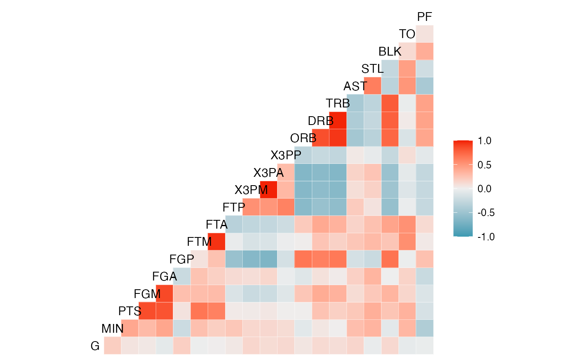
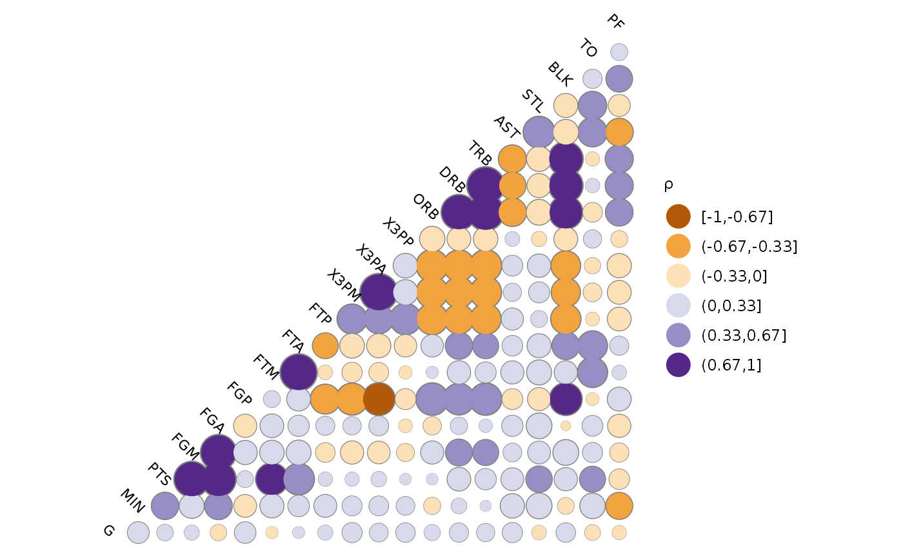

Function for making a correlation matrix plot, using ggplot2.
The function is directly inspired by Tian Zheng and Yu-Sung Su's
corrplot function in the 'arm' package.
Please visit https://github.com/briatte/ggcorr for the latest version
of ggcorr, and see the vignette at
https://briatte.github.io/ggcorr/ for many examples of how to use it.
Usage
ggcorr(
data,
method = c("pairwise", "pearson"),
cor_matrix = NULL,
nbreaks = NULL,
digits = 2,
name = "",
low = "#3B9AB2",
mid = "#EEEEEE",
high = "#F21A00",
midpoint = 0,
palette = NULL,
geom = "tile",
min_size = 2,
max_size = 6,
label = FALSE,
label_alpha = FALSE,
label_color = "black",
label_round = 1,
label_size = 4,
limits = c(-1, 1),
drop = is.null(limits) || identical(limits, FALSE),
layout.exp = 0,
legend.position = "right",
legend.size = 9,
...
)Arguments
- data
a data frame or matrix containing numeric (continuous) data. If any of the columns contain non-numeric data, they will be dropped with a warning.
- method
a vector of two character strings. The first value gives the method for computing covariances in the presence of missing values, and must be (an abbreviation of) one of
"everything","all.obs","complete.obs","na.or.complete"or"pairwise.complete.obs". The second value gives the type of correlation coefficient to compute, and must be one of"pearson","kendall"or"spearman". Seecorfor details. Defaults toc("pairwise", "pearson").- cor_matrix
the named correlation matrix to use for calculations. Defaults to the correlation matrix of
datawhendatais supplied.- nbreaks
the number of breaks to apply to the correlation coefficients, which results in a categorical color scale. See 'Note'. Defaults to
NULL(no breaks, continuous scaling).- digits
the number of digits to show in the breaks of the correlation coefficients: see
cutfor details. Defaults to2.- name
a character string for the legend that shows the colors of the correlation coefficients. Defaults to
""(no legend name).- low
the lower color of the gradient for continuous scaling of the correlation coefficients. Defaults to
"#3B9AB2"(blue).- mid
the midpoint color of the gradient for continuous scaling of the correlation coefficients. Defaults to
"#EEEEEE"(very light grey).- high
the upper color of the gradient for continuous scaling of the correlation coefficients. Defaults to
"#F21A00"(red).- midpoint
the midpoint value for continuous scaling of the correlation coefficients. Defaults to
0.- palette
if
nbreaksis used, a ColorBrewer palette to use instead of the colors specified bylow,midandhigh. Defaults toNULL.- geom
the geom object to use. Accepts either
"tile","circle","text"or"blank".- min_size
when
geomhas been set to"circle", the minimum size of the circles. Defaults to2.- max_size
when
geomhas been set to"circle", the maximum size of the circles. Defaults to6.- label
whether to add correlation coefficients to the plot. Defaults to
FALSE.- label_alpha
whether to make the correlation coefficients increasingly transparent as they come close to 0. Also accepts any numeric value between
0and1, in which case the level of transparency is set to that fixed value. Defaults toFALSE(no transparency).- label_color
the color of the correlation coefficients. Defaults to
"grey75".- label_round
the decimal rounding of the correlation coefficients. Defaults to
1.- label_size
the size of the correlation coefficients. Defaults to
4.- limits
bounding of color scaling for correlations, set
limits = NULLorFALSEto remove- drop
if using
nbreaks, whether to drop unused breaks from the color scale. Defaults toFALSE(recommended).- layout.exp
a multiplier to expand the horizontal axis to the left if variable names get clipped. Defaults to
0(no expansion).- legend.position
where to put the legend of the correlation coefficients: see
themefor details. Defaults to"bottom".- legend.size
the size of the legend title and labels, in points: see
themefor details. Defaults to9.- ...
other arguments supplied to
geom_textfor the diagonal labels.
Note
Recommended values for the nbreaks argument are 3 to
11, as values above 11 are visually difficult to separate and are not
supported by diverging ColorBrewer palettes.
See also
cor and corrplot in the
arm package.
Examples
# Small function to display plots only if it's interactive
p_ <- GGally::print_if_interactive
# Basketball statistics provided by Nathan Yau at Flowing Data.
dt <- read.csv("http://datasets.flowingdata.com/ppg2008.csv")
# Default output.
p_(ggcorr(dt[, -1]))

# Labeled output, with coefficient transparency.
p_(ggcorr(dt[, -1],
label = TRUE,
label_alpha = TRUE
))
# Custom options.
p_(ggcorr(
dt[, -1],
name = expression(rho),
geom = "circle",
max_size = 10,
min_size = 2,
size = 3,
hjust = 0.75,
nbreaks = 6,
angle = -45,
palette = "PuOr" # colorblind safe, photocopy-able
))

# Supply your own correlation matrix
p_(ggcorr(
data = NULL,
cor_matrix = cor(dt[, -1], use = "pairwise")
))